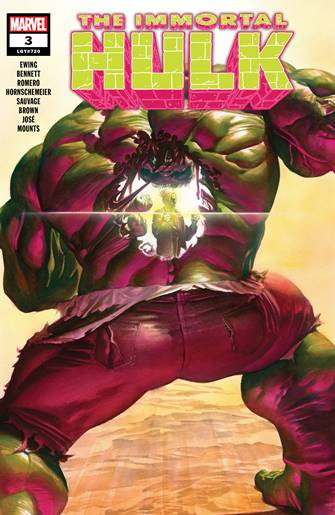
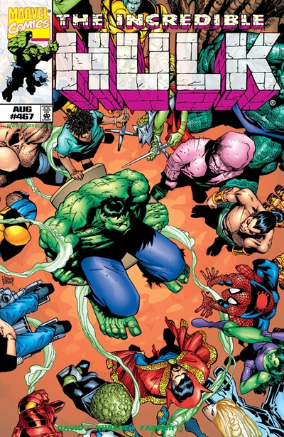
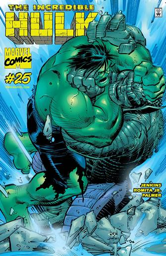
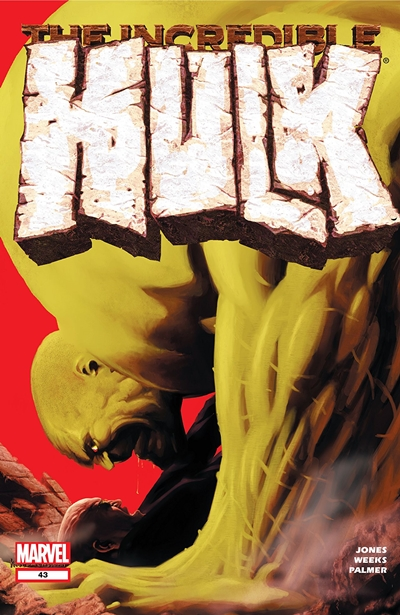
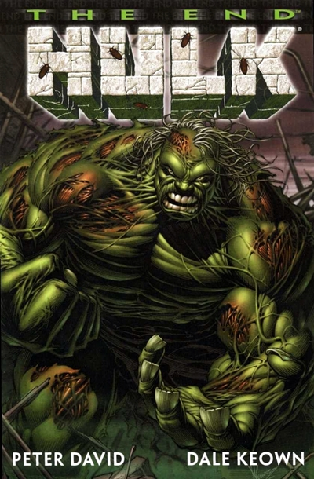

Autor del blog: Alejandro Gomez Garcia
Fecha de la publicacion: 18/02/2022 a las 8:30 pm
Origenes de HULK
Hulk nace en el 1962 de la invención de Stan Lee ( escenificador ) y Jack Kirby ( diseñador ).
El nombre Hulk, en el original americano significa individuo grande, torpe, grotesco y en efecto este personaje
es el símbolo mismo de la fuerza bestial. La historia de Hulk empieza cuando el científico americano de Bruce
Banner viene encargado del ministro de la defensa americana, de experimentar una bomba a los radios de gama,
en el desierto del New Messico. Sucedió pero, que durante la cuenta atrás, antes de la explosión, el joven Rick
Jones, ignorante de todo, hallara en aquella zona, así con un gesto heroico, el científico de Bruce Banner,
se echó sobre el cuerpo del muchacho para protegerlo, arrojando el en una acequia y exponiendo su cuerpo a la
explosión de los radios de gama. Bruce Banner a pesar de la violencia de las radiaciones, sobrevivió, pero le
sucedió algo de increíble. Durante la puesta de sol el doctor Banner se transformó en el increíble Hulk, un
gigante de la piel gris y de la fuerza sobrehumana, mientras a las primeras luces del alba volvió a tomar su
forma humana.
I nizialmente después, la transformación pasaba solo a la puesta de sol, pero con el pasar del tiempo, en cualquiera hora del día,
si el doctor Banner sufría algún fuerte emoción, como un ataque de ira, perdía conocimiento y se transformaba en el increíble
Hulk ésta vez del color de la piel verde, estallando en conjunto su fuerza increíble centuplicada de la cólera. Para calle
de este transformación, Hulk está considerado un peligro para la sociedad, por tanto el científico Bruce Banner tiene secreto
lo que él considera un su grande problema ( también aquí el súper-héroe tiene súper-problemas ). Hulk viene espués perguido
de los hombres y en particular de las fuerzas militares mandan del implacable general Ross.
Poderes y habilidades
Fuerza Ilimitada : Hulk es fácilmente el ser físico más poderoso de la tierra. Su fuerza varia dependiendo de que encarnación se trate, siendo el Hulk Gris la encarnación con la fuerza base más baja y el Salvaje Bruce Banner la más débil. Según las escalas de Marvel pertenece a la clase 100 en fuerza es decir capaz de exceder las 100 toneladas. La clase 100 es la escala máxima en Marvel, de tal manera que ha esta clase pertenecen seres como Galactus y Thor. No existe clase 200 ó 500 ó 1000 o más por que esta escala sobre entiende que cualquiera que sobre pase este peso ya es incalculable o de limites desconocidos. El poder primario de Hulk, es el aumento exponencial de fuerza o mas bien el aumento exponencial de sus habilidades físicas, por que así como aumenta su fuerza, aumenta también sus demás atributos físicos, siendo más fuerte, más resistente, más inmune y más rápido. Su fuerza se relaciona directamente con su descarga de adrenalina de tal manera que mientras más furioso o presionado se encuentre más fuerte es. La fuerza base de Hulk tampoco es conocida por que si bien pertenece a la clase 100 no quiere decir que esta sea un peso base. A través de los años Hulk a realizado en sus combates proezas de fuerza suprema.
Para ver mas informacion acerca de su creador¿Porque me gusta?
Hulk es mi héroe favorito sobre todo porque, fue mi favorito desde chiquito siempre y me hace recordar buenos momentos jugando con mis juguetes de el o juegos inventados sobre super héroes y fue gracias a el que me empecé a interesar en estas cosas de los cómics y películas de super héroes
Mejores Comics de HULK
|  IMMORTAL HULK |
 Las arenas solitarias |
 Siempre en mi mente |
|  La estapa de Bruce Jones |
 HULK: EL FIN |